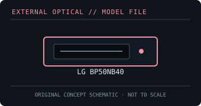

[ OPTICAL DRIVES // IDENTIFIED EXTERNAL MODEL ]
LG BP50NB40
Ultra-slim USB Blu-ray/DVD writer with BDXL and M-DISC support. Use the exact BP50NB40 model label when matching media, firmware and host software.

IDENTIFICATION: Confirm the full model/suffix against the label and manufacturer documentation. Read capability is not write capability; speed ratings depend on media and recording mode.
Model-specific specifications
| Catalog subcategory | External Blu-ray drives |
|---|---|
| Exact product identifier | LG BP50NB40 |
| Supported write formats / rates | BD-R up to 6× and BD-RE up to 2×; supports listed BDXL BD-R/RE media (layer-dependent rates). DVD±R up to 8×, DVD±RW up to 8×, DVD-RAM up to 5×, CD-R up to 24× and CD-RW up to 16×. |
| Supported read formats / rates | BD-ROM up to 6×; DVD-ROM up to 8×; CD-ROM up to 24×. Reads BD-R/RE and BDXL media, DVD±R/RW, DVD-RAM and CD-R/RW; M-DISC support is model-listed. |
| USB interface and power | USB 2.0 external interface (480 Mb/s signalling); slim USB-powered unit. Direct connection to a compatible host is preferred over an unpowered hub. |
| Host compatibility | LG lists Windows and Mac OS X compatibility for data functions. Bundled CyberLink playback/burning applications are platform/version dependent; protected Blu-ray playback needs compatible software and host configuration. |
| Model distinction | BP50NB40 is a portable external drive, not an internal slimline mechanism; confirm media layer and application support rather than assuming every supported read format is writable at the same rate. |
Host and media notes
BP50NB40 is a portable external drive, not an internal slimline mechanism; confirm media layer and application support rather than assuming every supported read format is writable at the same rate.
- Use the drive only with media types explicitly supported by the exact manual. BDXL, standard BD-R/RE and UHD Blu-ray are distinct capabilities.
- Check operating-system and playback/authoring application support independently; a USB connection alone does not provide Blu-ray codec, protected-video or UHD playback capability.
- For preservation work, record drive model/firmware, host interface, software, media type, checksums and read/verification errors with each image.
Model documentation and specification sources
- LG BP50NB40 technical specificationModel-specific format, interface and rated-speed reference.
- LG BP50NB40 service manualModel-specific service specification and speed table.
Manufacturer and manual speed ratings are maxima under supported media conditions and are not a guarantee of actual sustained read/write performance on an individual disc.